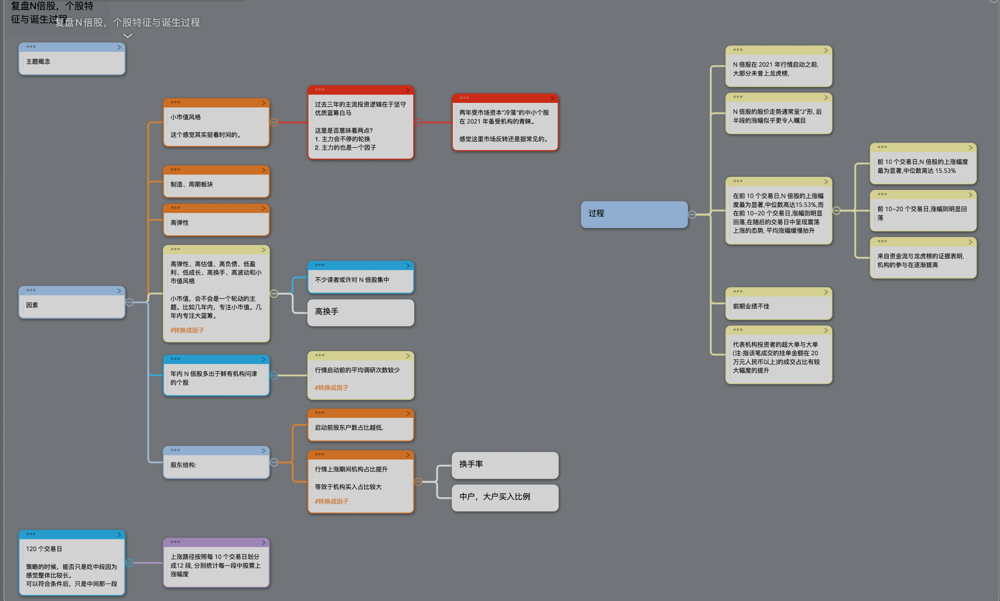
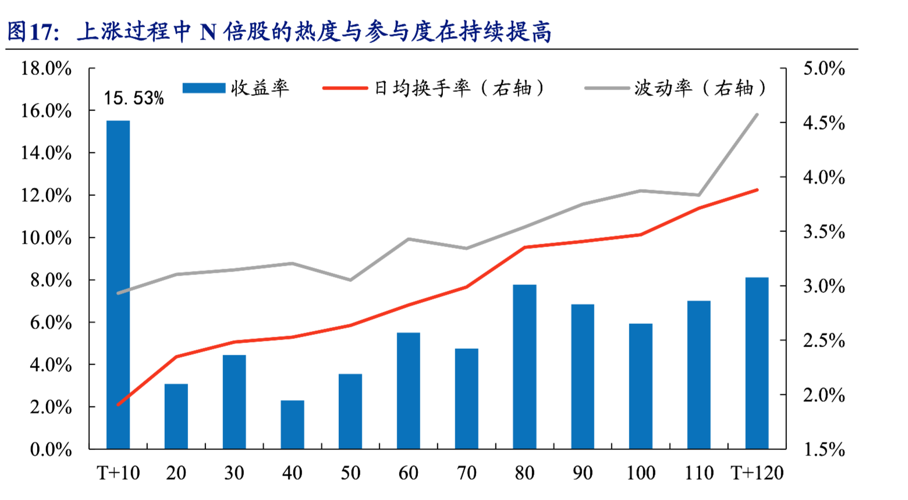
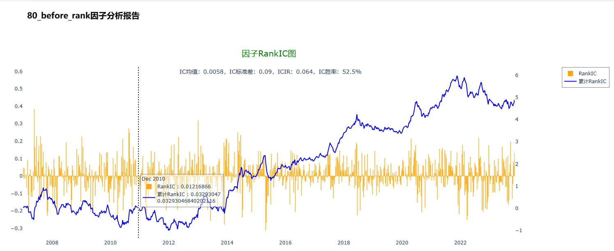
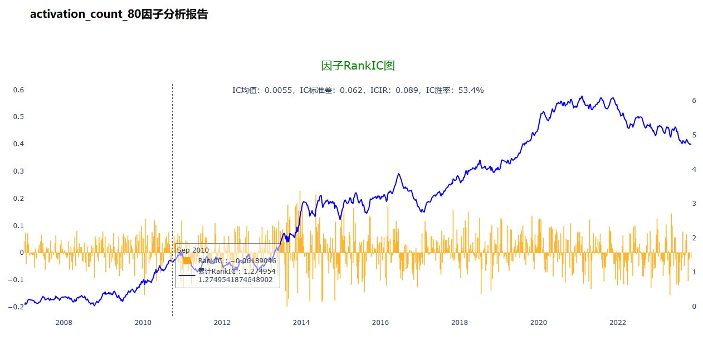

基于N倍股的研报的实现和研究。
研报总结
下图，就是对整篇研报的一个研报所做的一个思维导图。
就此研报来说。大致分为两部分。分别是涨幅的之前状态的分析和一些因子的归类。
根据这篇研报，我用的是事件策略的框架去测试的。主要是以下几点原因。
- 只吃一段的利润，而不是全部。吃全段的试错成本太高。根据研报的显示，N倍股整个周期为120天。选错了，亏钱不说，大半年就没钱赚了。
- 比较契合。因为反弹这类事情，不是天天有的。类似于事件来说。
所以构建策略的基本思路，就是过去一年中，以最低点在最低点后N*10天为事件的触发时间点。然后根据研报加入一些因子来做过滤。
因子
反弹点
如果要用这份研报来构筑策略，我选择从反弹点开始。
- 收益的分析，是以最低点开始计算120天，然后10天为一个周期。除了第一个周期之外，最高的是第八个周期。其实这个也和回测一致。
- 之前三年处于历史低位。换句话，N倍股都是反弹。
可以看上传文件mark_bottom_flag.py
下图为在过去一年内的最低点之后80天买入的IC

缺少关注
研报中，多次提到，在上涨之前，这些个股，都是没有被关注的。其中包括。
- 没有被机构调研。
- 没有进入龙虎榜。
- 股东人数较少
80天前，调研次数为0的IC

过程中机构买入，慢慢变大
这里我做了两个统计，都是根据已有数据中的机构买入来进行计算的。
- 在上涨周期中，机构净流入比前一天高的天数。
- 在上涨周期中，机构净流入为正的天数。
可以看具体回测。感觉影响不大。
没有研究的因子
| 因素 | 原因 |
|---|---|
| 小市值 | 没有加入，主要觉得这个因子比较强，实现起来也比较简单 |
| 行业热度 | 一来比较难写。二来问了夏普，说这类因子一般效果不好 |
| 换手率 | 没有实验 |
| 财务因子 | 主要自己不太懂，有兴趣老板可以帮忙尝试一下 |
| 高波动，高弹性 | 要用分钟数据。 |
策略
我写了一个策略。基于事件策略框架。事件的条件基于判断N*10天前，是否有以下事件。
- 发生了过去一年的最低点。
- 之前没有相应的机构调研。
- 机构买入增加。
但是效果不是太好。代码和回测结果可以见附件。